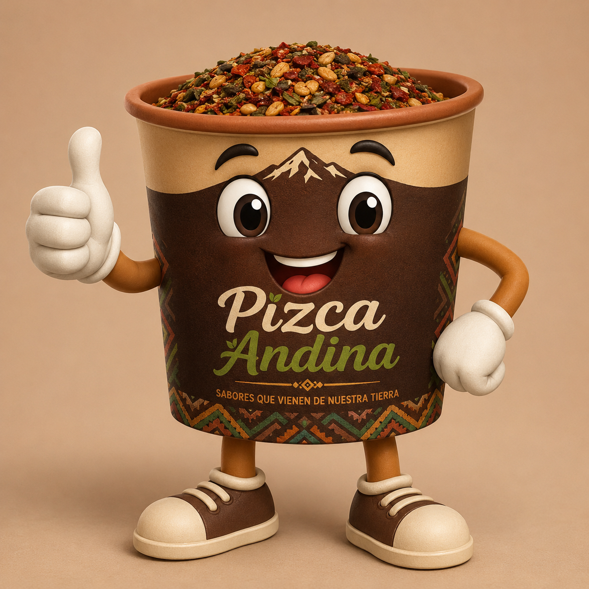
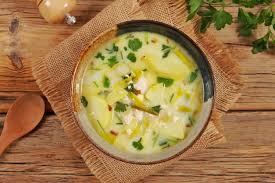

Pizca Andina


Pizca Andina
Zona:Andes Venezolanos.
Tiempo de preparacion 15-20 mínutos.
Asi deberia quedarnos la Pizca Andina

Ingredientes:
- 2 papas grandes cortadas en cubos pequeños.
- 2 taza de agua y 1 taza de leche.
- 100 gramos de queso Fresco en cubitos.
- 2 huevos.
- Cebolla de verdeo y cilantro al agusto.
- 1 cucharada de mantequilla.
- Sal y pimienta.
Preparación:
- Sofreír: En una olla, derrite la mantequilla y sofrei la cebollin en picado con un poco de cilantro.
- cocinar papa:Añade las papas, agua y sal.Cocina las papas hasta que esten blandos
- Leche y queso:incorpora la leche y queso.Deja hervir a fuego por 2 minutos
- Huevos:Agrega los huevos enteros sin romper las yema y cocina 2 minutos más hasta que se pongan duro
- Servir:Apaga el fuego,añade cilandro frezco picado y sirvete.
Siguinos en nuestras Redes sociales